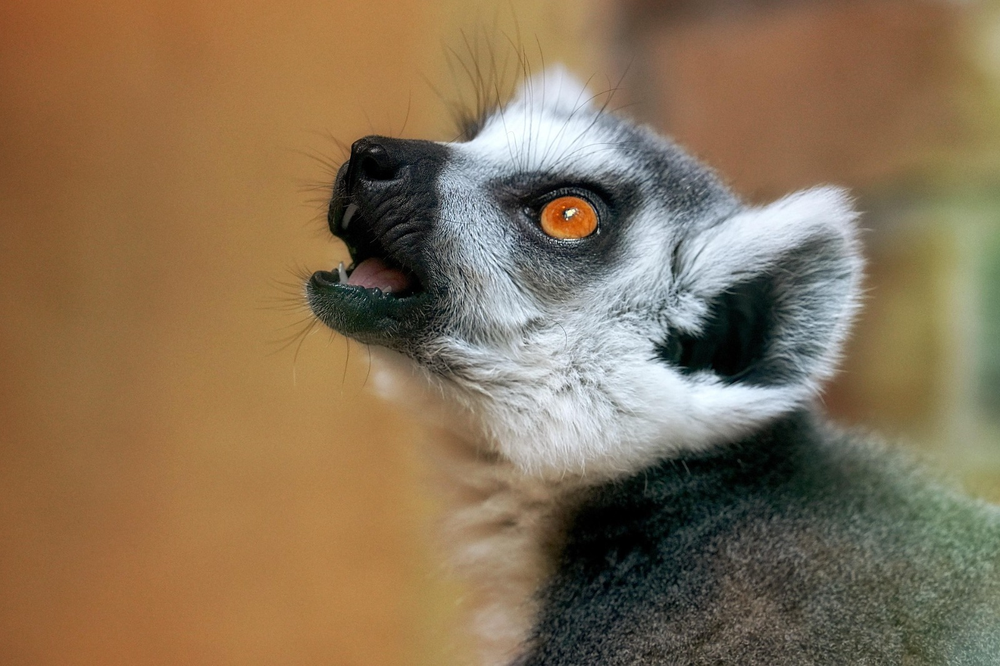

<html>
<head>
    <title>Menú Desplegable</title>
<body 
background="cas.jpg">
    <style>
          
    body { font-family: Arial, sans-serif; }
    
    .menu { margin: 0; padding: 0; list-style: none; }
    .menu li { float: left; position: relative; width: 150px; background-color: #333; }
    .menu li a { display: block; padding: 15px; color: white; text-decoration: none; text-align: center; }
    .menu li a:hover { background-color: #555; }

    .submenu { display: none; position: absolute; top: 100%; left: 0; margin: 0; padding: 0; list-style: none; }
    .submenu li { background-color: #444; width: 100%; }
    
    .menu li:hover > .submenu { display: block; }
 
    </style>
</head>
</html>
<body>

    <ul class="menu">
        <li><a href="#">Peces</a>
            <ul class="submenu">
                <li><a href="https://www.fishipedia.es/pez/betta-splendens">Pez Betta</a></li>
                <li><a href="https://www.fishipedia.es/pez/holacanthus-ciliaris">ángel reina</a></li>
                <li><a href="https://www.fishipedia.es/pez/hyphessobrycon-eques">Tetra serpae</a></li>
                <li><a href="https://www.tomscatch.com/es/especies-de-peces/marlin-blanco-11">Marlin Blanco</a></li>
                <li><a href="https://www.fishipedia.es/pez/hyphessobrycon-erythrostigma">Megalamphodus</a></li>
            </ul>
         </li>
        <li>
            <a href="#">Mamiferos</a>
            <ul class="submenu">
                <li><a href="gorila.html">Gorila</a></li>
                <li><a href="lemur.html">Lemur</a></li>
                <li><a href="caballo.html">Caballo</a></li>
                <li><a href="armadillo.html">Armadillo</a></li>
                <li><a href="reno.html">Reno</a></li>
            </ul>
        </li>
        <li><a href="#">Anfibios</a>
            <ul class="submenu">
                <li><a href="anfi2.html">Anfibios</a></li>
            </ul>
        </li>
        <li><a href="#">Aves</a>
            <ul class="submenu">
                <li><a href="https://www.nationalgeographicla.com/animales/loros">Loro</a></li>
                <li><a href="https://www.faunia.es/planea-tu-visita/animales/tucan-toco">Tucan Toco</a></li>
                <li><a href="https://deanimalia.com/selvaaguilafilipina.html">Águila Monera</a></li>
                <li><a href="https://aveschile.cl/picaflor-2/">Colibrí de Arica</a></li>
                <li><a href="https://laberintoenextincion.blogspot.com/2009/10/maca-tobiano.html">Macá Tobiano</a></li>
            </ul>
         </li>
         <li><a href="#">Reptiles</a>
        <ul class="submenu">
                <li><a href="coco.html">Cocodrilo De Agua Salada</a></li>
                <li><a href="torta.html">Tortuga gigante de galapagos</a></li>
                <li><a href="komodo.html">Dragon De Komodo</a></li>
                <li><a href="cama.html">Camaleon</a></li>
                <li><a href="ser.html">Serpiente De Cascabel</a></li>
            </ul>
         </li>
         <li><a href="index.html">Menu Principal</a>
         </li>
    </ul>

</body>
</html>

<html>
<head>
<title>LEMUR</title>
</head>

<body background="isla.jpg" text="white">
<center><marquee width="75%" height="50" bgcolor="blue"><h2>LEMUR</h2></marquee></center>
<center><font color="red"><h3>(Lemuroidea)</h3></font></center>
<center></center>
<h4>Conocido por su agilidad y su mirada penetrante, el lémur es un primate único perteneciente al suborden de los estrepsirrinos que se encuentra exclusivamente en la isla de Madagascar y algunas islas menores circundantes. Estos mamíferos habitan una gran variedad de ecosistemas que van desde selvas tropicales húmedas hasta bosques secos y espinosos, donde llevan un estilo de vida mayoritariamente arborícola. Su estructura social es notable por el dominio de las hembras, quienes lideran grupos que se comunican mediante complejas vocalizaciones y marcas de olor. Su dieta es principalmente herbívora, basada en frutas y hojas, aunque su existencia se ve seriamente amenazada por la pérdida crítica de su hábitat natural debido a la actividad humana.
</h4>
<center><h3>CARACTERISTICAS</h3></center>
<ol type="1" align="left">
<li>Los lémures poseen un sentido del olfato sumamente desarrollado y glándulas odoríferas que utilizan para marcar territorio y comunicarse con otros miembros del grupo.</li>
<li>El papel que desempeña la hembra en el grupo es el de líder absoluta, siendo una de las pocas especies de primates donde existe un matriarcado social marcado.</li>
<li>El lémur se caracteriza por su larga cola anillada o peluda que, aunque no es prensil, le sirve para mantener el equilibrio y enviarse señales visuales mientras se desplaza.</li>
<li>Los lémures tienen pulgares oponibles y uñas en lugar de garras en la mayoría de sus dedos, lo que les permite sujetarse con gran precisión a las ramas de los árboles.</li>
<li>Son animales principalmente herbívoros y su dieta se basa en frutas, flores y hojas de la vegetación nativa de Madagascar, aunque algunas especies pequeñas consumen insectos.</li>
</ol>
</body>
</html>